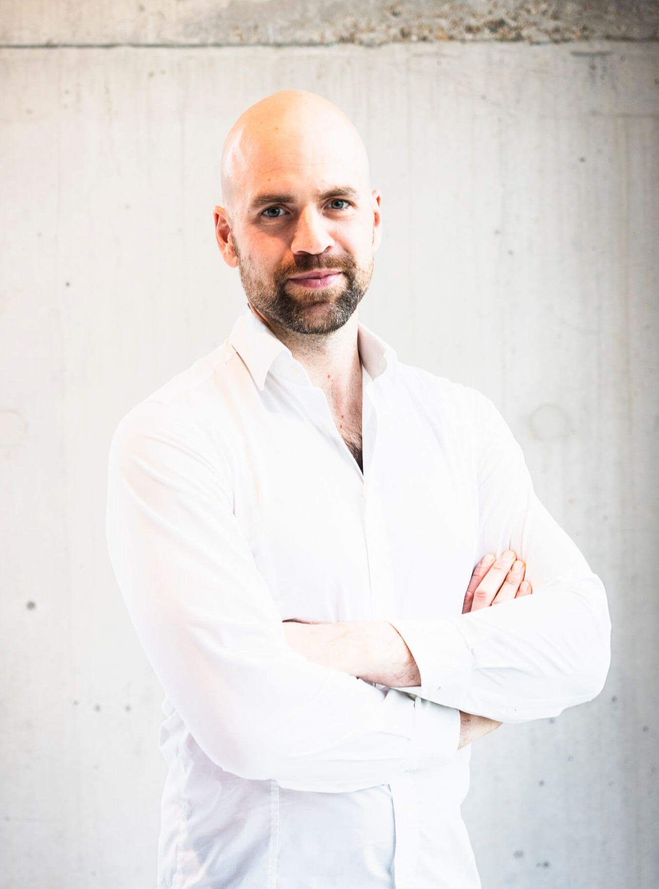

Read what I write.
Articles, tutorials and the #MFSMAP reference model.

I am one of the lucky few who found a genuine passion in my profession. My career is built at the intersection of complex software, physical automation, and the humans who make it all work. I specialize in translating the logic of SAP EWM into systems that material flow systems can execute and warehouse operators can actually use.
While I leverage modern tools like AI to streamline aspects from planning to coding, I've learned that the success of an EWM project is decided on the warehouse floor, not just on a screen. It requires deep human interaction and real-world problem-solving skills that artificial intelligence alone cannot provide.
I don't just work with SAP EWM; I enjoy the specific challenges these intralogistics systems present. Deep-diving into this logic and sharing those human-centric insights is how I contribute to the community - on WMexperts.online and in the projects I take on as a Consultant.